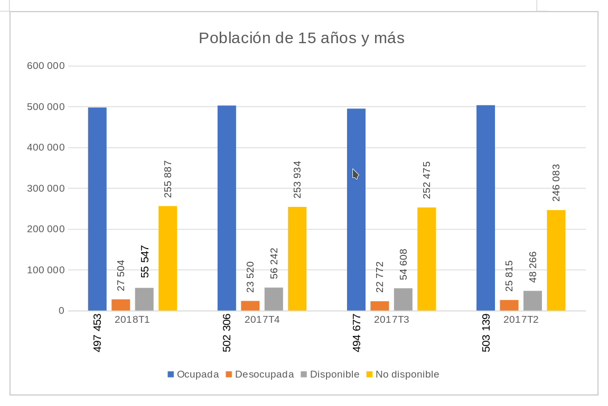

En la actualización de datos del Encuesta Nacional de Ocupación y Empleo para el primer trimestre del 2018, el total de la población de 15 años y más asciende a 836,391 para el área metropolitana de Torreón, de la cual el porcentaje de las personas que se consideran económicamente activas es el 62.76%, o 524,957. Esto equivale al 46.87% del total de la población de la ciudad.
De la Población Económicamente Activa (PEA) el 94.76% o 497,453 personas, se manifiesta ocupada. Esta cifra representa una reducción respecto al último trimestre del 2017 en donde era de 95.53% y respecto al año anterior en el 2º trimestre de 95.12%.
De manera análoga, la población desocupada aumentó respecto al trimestre anterior al pasar de 4.47% a 5.24% y 4.88% respecto al 2º trimestre del 2017. En esta categoría, se hace énfasis que la mayor proporción de población desocupada se encuentra en los rangos de edad de 15 a 44 años en hombres, representando un 71% de los hombres que se encuentran bajo esta categoría, mientras que para mujeres esta cifra asciende a 84% para los mismos rangos de edad.
La edad promedio de las personas que se declararon como ocupadas es de 39.6 años con 11 años en promedio de escolaridad, mientras que para el estado de Coahuila es de 39 con 10.4 años.
La población que se manifiesta como ocupada se concentra en un 74.71% como trabajadores subordinados y remunerados, el 18.36% como personas que trabajan por cuenta propia, el 4.78% son empleadores y el 2.14% son personas que trabajan, pero no son remunerados.
Los trabajadores de tiempo completo ganaron en promedio $7,288.32, lo que equivale a $1,822 semanalmente, con una jornada semanal de 41.6 horas. La percepción de ingreso por hora es de $43.8 en general. En el caso de los hombres, esta percepción asciende a $45.1 por hora con un promedio de horas laboradas a la semana de 45, mientras que para el caso de las mujeres es de $42.1, considerando que las horas laborales promedio son de 36.6 semanales.
Esta diferencia en horas de trabajo y salarios se traduce en una brecha salarial promedio de $382.5 a la semana y un cambio en ingresos respecto al trimestre anterior mayor en las mujeres, el cual asciende a $60.28 más, al pasar de $1,480.58 a la semana a $1,540.86. En el caso de los hombres ellos presentan un ingreso promedio semanal de $2029.5, que son $13.05 menos respecto al último trimestre del año anterior en el que ascendió a $2,042.55.
La población que se cataloga ocupada por cuenta propia aumentó respecto al último trimestre al pasar de 17.49% a 18.36% y respecto al último año de 17.10%. En este aspecto cabe destacar que si bien en totales el cambio no es significativo, al hacer la diferenciación entre hombres y mujeres, existe un aumento del 5.6% en cuanto al trimestre anterior por parte de la población masculina y un descenso del 17.95% para el caso de mujeres.
Las personas ocupadas lo hacen en el comercio en un 21.77%, industria manufacturera en un 19.6%, construcción en un 8.36%, restaurante y servicios de alojamiento en un 8.0% y en el gobierno un 3.31%. Estas cifras reportan un marcado descenso respecto al trimestre anterior, al pasar en el caso del sector secundario, la industria manufacturera muestra un decremento del 18% al pasar de 6,807 personas ocupadas en el último trimestre del 2017 a 5,601 para marzo del 2018.
En el caso del sector terciario, el comercio presenta una variación negativa del 24% de personas ocupadas, lo que significa que 2,878 personas dejaron de laborar en este rubro, mientras que en el caso de servicios profesionales, la variación trimestral asciende a 30% o 1,863 personas.
El 12.33% de las personas ocupadas ganan hasta un salario mínimo, que equivale a 61,360 personas, mientras que 163,412 personas, o el 32% de la población ocupada, gana entre 1 y 2 salarios mínimos. En términos de género, la proporción de mujeres ocupadas que gana hasta 3 salarios mínimos es del 71%, mientras que en el caso de los hombres es del 61%. En el estrato más alto, personas que ganan 5 o más salarios mínimos, el porcentaje de hombres en esta categoría es de 7.60% mientras que el de mujeres es del 4.54%.

